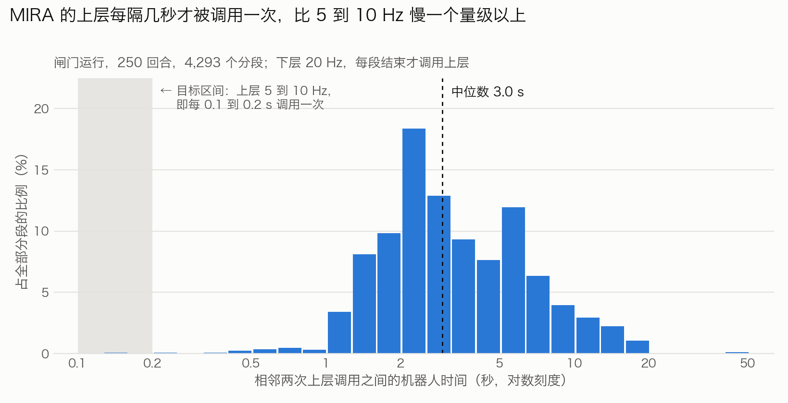

预训练上层 + 快速下层：实验记录
这页只放真正跑出来的数字。计划和每个实验的设计在 具体计划，三分钟版在 快速阅览。
| 版本 | 日期 | 变了什么 | 原因／证据 | 结果／记录 | 截图／视频 |
|---|---|---|---|---|---|
| v1 | 2026-11-25 | π0.5 在 LIBERO 四个套件上的基线复现；π0.5 和 Fast-WAM 的空 GPU 计时 | 对应计划页 v1 的 A 组闸门和计时 | 基线过闸门；计时见 § 8 | 无 |
| v2 | 2026-11-25 | H1 MIRA 的闸门（250 回合）和两层各自的运行统计；旁证组补齐：π0.5 的重跑对照、Fast-WAM 两种模式的成功率 | 计划页 v2 改测真正的两层系统，H1 排第一 | 闸门过：§ 1；上层约 0.24 Hz：§ 2 | 两段示例；调用间隔分布 |
| v3 | 2026-11-25 | H1 的“关规则”和“详细句”两个臂；“没微调的上层”试跑后改成子集；H3 的评测流程检查；H4、H2 的冒烟测试 | 计划页 v4 | 两个臂都低约 10 个点：§ 4；流程检查：§ 5 | 无 |
- H1 复现了。MIRA（Qwen3-VL-4B 规划器 + π0.5 执行器）在 RoboCasa365 上，50 个任务各 5 回合，成功率 49.6%（124 / 250，区间 43.5 到 55.8），官方 51.4%。按官方每个任务的成功率算，我们应得 128.5 个成功，实得 124 个。
- 上层约每 4 秒运行一次，不是 5 到 10 Hz。下层每执行完一段才调用上层。相邻两次调用之间的机器人时间，中位数 3.0 秒，平均 4.2 秒，折合约 0.24 Hz。短于 1 秒的分段只有 1.7%。
- 上层单次调用约 0.8 秒。这是 H200 上单独跑的数字，只有 2 个回合 12 次调用。输入的中位数约 1,900 个 token，带满 32 帧视频时约 3,900 个。照这个输入量，上层最快约 1.2 Hz。
- 这个系统不只有两层。上层和下层之间有一组手写规则，80% 的回合触发过，平均每回合 10.4 次；6.5% 的分段由规则直接重发，没有调用上层。上层每轮还读一个来自模拟器的真值：任务是否已完成。
- 规则值约 10 个点（初步）。关掉规则后是 39.2%，比默认低 10.4 个点（p = 0.007）。四分之一的回合是上层误判“任务已完成”而提前结束的。
- 交接的措辞也值约 10 个点（初步）。把交给下层的短句换成详细句，39.6%，低 10.0 个点（p = 0.006）。两个臂掉的都主要是原子任务。
- 这两个差值还缺噪声底。默认设置的重跑正在跑。闸门是单独占着卡跑的，两个臂是和别的任务共用卡跑的；评测循环是同步的，按理不受影响，重跑会检验这一点。
- 旁证组。官方 π0.5 的 LIBERO 数字复现了；同一设置重跑一遍，500 回合里有 44 回合的成败翻转，这是比较各臂时的噪声底。Fast-WAM 先想象未来 97.4%，不想象 95.4%，差 2.0 个点，没有达到显著。
总表
| 项 | 设置 | 结果 | 参照 |
|---|---|---|---|
| H1 成功率，总体 | RoboCasa365，50 任务 × 5 回合，官方默认 | 49.6%（124 / 250） | 官方 51.4% |
| H1 成功率，分三类 | 原子／见过的组合／没见过的组合 | 83.3 / 40.0 / 21.2 | 官方 78.8 / 49.4 / 22.6 |
| H1 关掉手写规则 | 同上 250 回合，按回合配对 | 39.2%（98 / 250） | 默认 49.6%，p = 0.007 |
| H1 交接换成详细句 | 同上 250 回合，按回合配对 | 39.6%（99 / 250） | 默认 49.6%，p = 0.006 |
| H1 每回合调用上层 | 原子／见过的组合／没见过的组合 | 5.2 / 21.4 / 26.4 次 | 官方 5.7 / 20.2 / 26.7 |
| H1 上层调用间隔 | 机器人时间，中位数；平均 | 3.0 s；4.2 s | 目标 0.1 到 0.2 s |
| H1 上层单次耗时 | 单独跑；10 套并行 | 0.81 s；2.64 s | — |
| H1 下层单次耗时 | 一个 16 步动作块，单独跑 | 64 ms | 16 步是 0.8 s |
| H3 流程检查 | 官方放出的 SmolVLA 权重，LIBERO 四套件各 100 回合 | 89 / 96 / 88 / 68 | 不是成绩，只验流程 |
| π0.5 成功率 | LIBERO 四套件，各 500 回合 | 98.4 / 98.0 / 97.6 / 93.2 | README 98.8 / 98.2 / 98.0 / 92.4 |
| π0.5 重跑 | LIBERO-10，同一设置再跑 500 回合 | 92.4%，44 回合翻转 | 第一遍 93.2% |
| Fast-WAM 成功率 | LIBERO-10：先想象未来；不想象 | 97.4%；95.4% | README 97.0；95.8 |
| π0.5 耗时 | VLM 前缀；每个 flow 步 | 22.7 ms；2.09 ms | — |
| Fast-WAM 耗时 | 不想象；先想象（各 10 步） | 71.5 ms；179.1 ms | — |
示例视频
两段都来自闸门运行，6 倍速。画面是三路相机拼成的一帧，也是上层看到的画面。顶部文字是这一段开始时上层交给下层的子目标，以及这一段实际执行了多少步。

§ 1H1 闸门
总体和三类任务都与官方数字相符；见过的组合任务偏低 9 个点，在抽样误差的边缘。
设置。官方仓库 yinpei-tri-pi/sys1_sys2（提交 b9afc15）和它放出的两份权重。官方评测循环 official_eval.py，--split target --seed 7，手写规则全开（官方默认）。官方每任务 50 回合，我们取前 5 回合。
| 任务类别 | 我们 | 95% 区间 | 官方 | 按官方每任务成功率，我们应得 | 偏差 |
|---|---|---|---|---|---|
| 原子任务（18 个） | 83.3%（75 / 90） | 74.3 – 89.6 | 78.8 | 70.9 个 | +1.1 个标准差 |
| 见过的组合任务（16 个） | 40.0%（32 / 80） | 30.0 – 51.0 | 49.4 | 39.5 个 | −1.7 个标准差 |
| 没见过的组合任务（16 个） | 21.2%（17 / 80） | 13.7 – 31.4 | 22.6 | 18.1 个 | −0.3 个标准差 |
| 总体 | 49.6%（124 / 250） | 43.5 – 55.8 | 51.4 | 128.5 个 | −0.7 个标准差 |
偏差怎么算的。官方文档给了每个任务 50 回合的成功率。把它当作每个任务的真实概率，算我们 5 回合应得几个成功，再和实得比；标准差同时计入我们这 5 回合和官方那 50 回合的抽样误差。50 个任务里没有一个单独偏离到 5% 显著水平。
结论的边界。总体相符。见过的组合任务低 9.4 个点，约 1.7 个标准差，不能排除是抽样，也不能排除我们的环境有小差别。每回合调用上层的次数与官方一致（5.2 对 5.7，21.4 对 20.2，26.4 对 26.7），说明循环本身的行为没有变。
核查。250 回合里没有因异常被记成失败的回合；上层的 4,281 次请求全部正常返回；回合结束的原因是环境判定成功 124 次、步数用完 124 次、同一子目标重复到上限 2 次。
50 个任务逐个对比
| 任务 | 类别 | 我们成功 | 官方成功率（%） | 我们每回合调用上层 | 官方每回合调用上层 |
|---|---|---|---|---|---|
| CloseBlenderLid | 原子任务 | 3 / 5 | 48 | 8.8 | 10.0 |
| CloseFridge | 原子任务 | 5 / 5 | 92 | 2.8 | 4.9 |
| CloseToasterOvenDoor | 原子任务 | 5 / 5 | 84 | 3.2 | 3.0 |
| CoffeeSetupMug | 原子任务 | 3 / 5 | 54 | 6.6 | 7.2 |
| NavigateKitchen | 原子任务 | 5 / 5 | 60 | 2.0 | 5.0 |
| OpenCabinet | 原子任务 | 5 / 5 | 96 | 4.8 | 4.8 |
| OpenDrawer | 原子任务 | 5 / 5 | 94 | 3.6 | 4.4 |
| OpenStandMixerHead | 原子任务 | 5 / 5 | 100 | 2.2 | 2.3 |
| PickPlaceCounterToCabinet | 原子任务 | 3 / 5 | 76 | 9.2 | 8.8 |
| PickPlaceCounterToStove | 原子任务 | 5 / 5 | 88 | 6.0 | 7.0 |
| PickPlaceDrawerToCounter | 原子任务 | 4 / 5 | 74 | 11.6 | 10.5 |
| PickPlaceSinkToCounter | 原子任务 | 5 / 5 | 100 | 5.8 | 6.3 |
| PickPlaceToasterToCounter | 原子任务 | 4 / 5 | 90 | 7.6 | 7.0 |
| SlideDishwasherRack | 原子任务 | 4 / 5 | 78 | 2.8 | 3.6 |
| TurnOffStove | 原子任务 | 3 / 5 | 44 | 5.6 | 7.0 |
| TurnOnElectricKettle | 原子任务 | 4 / 5 | 92 | 4.2 | 3.4 |
| TurnOnMicrowave | 原子任务 | 5 / 5 | 82 | 4.2 | 4.5 |
| TurnOnSinkFaucet | 原子任务 | 2 / 5 | 66 | 2.8 | 3.1 |
| DeliverStraw | 见过的组合任务 | 2 / 5 | 56 | 22.6 | 21.0 |
| GetToastedBread | 见过的组合任务 | 5 / 5 | 74 | 12.0 | 13.9 |
| KettleBoiling | 见过的组合任务 | 1 / 5 | 54 | 15.4 | 14.6 |
| LoadDishwasher | 见过的组合任务 | 2 / 5 | 46 | 16.2 | 17.8 |
| PackIdenticalLunches | 见过的组合任务 | 1 / 5 | 20 | 57.4 | 52.7 |
| PreSoakPan | 见过的组合任务 | 3 / 5 | 70 | 14.8 | 15.7 |
| PrepareCoffee | 见过的组合任务 | 0 / 5 | 12 | 14.4 | 15.4 |
| RinseSinkBasin | 见过的组合任务 | 2 / 5 | 50 | 13.8 | 12.3 |
| ScrubCuttingBoard | 见过的组合任务 | 3 / 5 | 62 | 12.0 | 12.3 |
| SearingMeat | 见过的组合任务 | 1 / 5 | 36 | 32.0 | 29.1 |
| SetUpCuttingStation | 见过的组合任务 | 1 / 5 | 58 | 28.6 | 23.3 |
| StackBowlsCabinet | 见过的组合任务 | 3 / 5 | 76 | 14.2 | 11.5 |
| SteamInMicrowave | 见过的组合任务 | 1 / 5 | 32 | 36.8 | 31.2 |
| StirVegetables | 见过的组合任务 | 2 / 5 | 42 | 20.0 | 18.5 |
| StoreLeftoversInBowl | 见过的组合任务 | 4 / 5 | 40 | 19.0 | 22.9 |
| WashLettuce | 见过的组合任务 | 1 / 5 | 62 | 13.8 | 11.0 |
| ArrangeBreadBasket | 没见过的组合任务 | 1 / 5 | 42 | 48.8 | 44.7 |
| ArrangeTea | 没见过的组合任务 | 0 / 5 | 24 | 19.6 | 17.8 |
| BreadSelection | 没见过的组合任务 | 1 / 5 | 50 | 15.0 | 15.8 |
| CategorizeCondiments | 没见过的组合任务 | 0 / 5 | 4 | 15.4 | 15.3 |
| CuttingToolSelection | 没见过的组合任务 | 2 / 5 | 36 | 16.6 | 13.8 |
| GarnishPancake | 没见过的组合任务 | 3 / 5 | 36 | 27.6 | 27.9 |
| GatherTableware | 没见过的组合任务 | 0 / 5 | 2 | 18.8 | 19.1 |
| HeatKebabSandwich | 没见过的组合任务 | 0 / 5 | 0 | 30.8 | 27.1 |
| MakeIceLemonade | 没见过的组合任务 | 1 / 5 | 28 | 34.0 | 30.9 |
| PanTransfer | 没见过的组合任务 | 0 / 5 | 2 | 29.8 | 27.6 |
| PortionHotDogs | 没见过的组合任务 | 1 / 5 | 10 | 29.8 | 36.0 |
| RecycleBottlesByType | 没见过的组合任务 | 1 / 5 | 6 | 30.8 | 33.3 |
| SeparateFreezerRack | 没见过的组合任务 | 1 / 5 | 8 | 32.8 | 36.0 |
| WaffleReheat | 没见过的组合任务 | 4 / 5 | 56 | 26.2 | 35.3 |
| WashFruitColander | 没见过的组合任务 | 2 / 5 | 44 | 24.0 | 24.1 |
| WeighIngredients | 没见过的组合任务 | 0 / 5 | 14 | 22.2 | 22.0 |
§ 2H1 两层各跑多快
上层由下层触发，平均每 4.2 秒一次；下层 20 Hz，每 0.8 秒重新规划一次。
上层何时运行
| 量 | 数值 |
|---|---|
| 每回合调用上层的次数 | 平均 17.2，中位数 15，第 90 百分位 36，最多 70。成功的回合平均 8.6 次，失败的回合平均 25.6 次 |
| 一段有多少步 | 第 10 百分位 32，中位数 59，平均 85，第 90 百分位 166，最长 950 |
| 折合机器人时间（20 Hz） | 1.6 s，3.0 s，4.2 s，8.3 s，47.5 s |
| 上层的平均频率 | 0.24 Hz |
| 一段怎么结束的 | 下层自己判断这一段做完：91.3%。上层给的步数预算用完：5.7%。环境判定任务成功：2.9% |
| 上层估的步数准不准 | 实际步数与估计步数之比，中位数 0.92；35% 的分段超过了估计 |
| 上层怎么评价上一段 | 除每回合第一次外的 3,766 次调用里：完成 72.7%，没做完、继续 22.3%，失败 1.5%，宣布任务结束 3.6% |
读法。决定上层频率的不是上层的算力，而是下层：91% 的分段由下层自己的完成度信号结束。上层给的预计步数只是上限，不是时钟。
上层每次读什么、写什么
| 调用 | 输入 | 输出 |
|---|---|---|
| 写计划（每回合一次） | 一帧拼接图（192 个视觉 token）和任务文字。合计中位数 431 个 token | 思考和里程碑清单。中位数 159 个 token，最多 449 |
| 每段之后 | 上一段的视频（每秒 4 帧，最多 32 帧，每两帧 192 个 token）、当前清单、任务状态、夹爪状态。合计中位数 1,910，第 90 百分位 3,883，最多 4,130 | 思考、对上一段的评价、清单的改动、下一个子目标、预计步数。中位数 171，最多 471 |
耗时
| 量 | 单独跑 | 10 套并行 |
|---|---|---|
| 上层写计划 | 0.69 s | 2.19 s |
| 上层每段之后，中位数 | 0.81 s | 2.64 s |
| 上层每段之后，第 90 百分位 | 0.95 s | 3.48 s |
| 下层一个 16 步动作块 | 64 ms | 0.53 s |
“单独跑”来自冒烟测试，只有 2 个回合、12 次上层调用，是粗数字；一次 6 个回合的单独计时已经排在队列里。“10 套并行”是闸门运行时的数字，10 个模拟器共用一张卡和 20 个核，不能当作模型本身的速度。
对 5 到 10 Hz 的含义。这个上层单次要 0.8 秒，是因为它每次读一段视频并写一段思考。要到 5 Hz，单次要压到 200 ms 以内，也就是输入和输出都要砍掉大半。MIRA 没有这样做，它靠下层的完成度信号把上层的调用次数降下来。
§ 3H1 里不属于两层的部分
官方 51.4% 是“上层 + 手写规则 + 模拟器真值 + 下层”的成绩；纯两层的数字要看关掉规则的对照臂。
手写规则。官方把一组规则放在上层和下层之间，改写上层的输出。闸门运行里：
| 规则 | 做什么 | 触发次数（250 回合） |
|---|---|---|
| 最后一个里程碑重试 | 上层宣布任务结束、但环境说没结束时，恢复最后一个里程碑再做 | 改写清单 335 次，其中压下“任务结束”134 次 |
| 步数估计改写 | 替换上层给的预计步数 | 323 次 |
| 重复上限 | 同一个子目标发到第三次（伸手类第二次）就推进到下一步。这一条是循环的终止策略，关不掉 | 记录 305 条 |
| 再按一次 | 把“继续按某个键”改写成“再按一次某个键”，后一种说法下层在训练里见得多 | 157 次 |
| 重新抓取 | 夹爪合上却没夹到东西时，插入一次重新抓取 | 56 次 |
80% 的回合至少触发一次，平均每回合 10.4 次。4,295 个分段里有 279 个（6.5%）是规则直接重发上一个子目标，没有调用上层。
模拟器真值。上层每轮的输入里有一行“当前任务状态：进行中／已完成”，来自模拟器的成功判定；还有一行夹爪状态。官方在代码和提示词里都标明这是特权信息。真机上没有这一位。
关掉规则的对照臂见 § 4。
§ 4H1 对照臂
关规则和换详细句各掉约 10 个点，都主要掉在原子任务；噪声底的重跑还没完。
每个臂 50 个任务各 5 回合，与闸门按“任务 × 回合序号”配对。下层、权重和其余设置不动。
| 臂 | 改了什么 | 成功率 | 原子／见过的组合／没见过的组合 | 与默认配对 |
|---|---|---|---|---|
| 默认（闸门） | — | 49.6%（124 / 250） | 83.3 / 40.0 / 21.2 | — |
| 关掉手写规则 | 只留“重复上限”；“最后一个里程碑重试”也关 | 39.2%（98 / 250） | 63.3 / 37.5 / 13.8 | 只有默认成功 57 回合，只有此臂成功 31 回合；−10.4 点，p = 0.007 |
| 交接换成详细句 | 官方开关 --prompt-source subgoal_detail；规则全开 | 39.6%（99 / 250） | 63.3 / 38.8 / 13.8 | 51 对 26；−10.0 点，p = 0.006 |
| 没微调的上层（试跑） | 上层换成 Qwen3-VL-4B 原版 | 0 / 9，中途停止 | — | 不配对 |
分类看。两个臂在原子任务上都低 20 个点（p = 0.001 和 0.003）。见过的组合任务几乎不变（−2.5 和 −1.2）。没见过的组合任务都低 7.5 个点，没有达到显著。
回合怎么结束的。
| 结束原因 | 默认 | 关规则 | 详细句 |
|---|---|---|---|
| 环境判定成功 | 124 | 98 | 99 |
| 步数用完 | 124 | 24 | 148 |
| 上层宣布任务结束，环境没判成功 | 0 | 64 | 1 |
| 同一子目标重复到上限 | 2 | 64 | 0 |
| 上层没给出子目标 | 0 | 0 | 2 |
读法。
- 关规则。四分之一的回合（64 个）死在上层误判完成。提示词里已经给了“任务状态：进行中”的真值，上层仍然宣布结束；默认设置下是规则把它压回去重做。也就是说，“任务做完没有”这件事，这个上层自己判断不可靠。
- 详细句。规则全开，回合不再提前结束，而是做不完、步数用光。官方默认交给下层的是短句；换成详细句以后下层执行变差。我没有核实下层训练时见过哪种句子，所以“措辞要和下层训练时一致”只是推测。
- 两个臂的总数几乎相同是巧合。逐回合看，两个臂结果相同的有 165 回合，按各任务成功率独立估计应有 171 回合，没有“同一批回合一起坏”的迹象；掉分的任务也不同。
没微调的上层为什么停了。原版模型每次回复很长，单次调用 8.4 秒，一回合要 7 分钟多，250 回合要 9 小时。完成的 9 个回合全部失败：7 个卡在重复同一个子目标，2 个没给出子目标。这 9 个都属于步数上限最长的组合任务，默认设置在这类任务上本来也低，所以只能当迹象。改成每任务 2 回合的子集（100 回合），已排队。
§ 5H2、H3、H4 的流程检查
三个实验的评测链路都跑通了；这里的数字只说明流程没装错，不是成绩。
H3：官方放出的 SmolVLA 权重
用 lerobot 自带的评测脚本跑 lerobot/smolvla_libero，每任务 10 回合，每 10 步重规划，图像 256 像素，MuJoCo 3.3.1。
| 来源 | Spatial | Object | Goal | Long | 平均 |
|---|---|---|---|---|---|
| 我们（400 回合） | 89 | 96 | 88 | 68 | 85.3 |
| 第三方报告（转述），同一权重、每 10 步重规划 | 76 – 78 | 89 – 91 | — | — | — |
| 第三方报告（转述），同一权重、自带设置（每 50 步） | 60 | 62 | 80 | 49 | 62.8 |
| 论文表 2（另一个配方的模型） | 90 | 96 | 92 | 71 | 87.3 |
我们的数字比第三方报告的高，接近论文。论文那一行是另一个配方训出来的模型，不能当这份权重的对照，只说明评测流程没有把成功率压低。第三方的差距可能来自 MuJoCo 版本：新版本会让 Spatial 的一个任务失败，我们固定在 3.3.1。
训练链路也检查过：用“上层一起训”的配置训 200 步、存盘、再评测自己存的检查点，40 回合没有报错（成功率 0，符合预期）。
H4：mimic-video 冒烟和闸门的中途数字
- 冒烟。LIBERO-Spatial，去噪停在第 0 步（完全不生成视频），10 个任务各 1 回合：成功 9 个。
- 闸门的中途数字。同一设置、每任务 50 回合的运行跑到 157 回合时被我停下（退回单卡），成功 149 个。它按任务顺序跑，这 157 回合只覆盖前 5 个任务（第 5 个只跑了一部分），不能当套件成绩；论文是 94.2%。续跑已排队。
H2：RoboDual 冒烟
CALVIN ABC→D，官方间隔 8，2 条序列：两条都连续完成 5 个任务。评测环境只用调试数据集的验证目录提供场景配置（场景 D），这一条前提成立。在与训练共用的卡上每条序列要近 10 分钟。
§ 6旁证：π0.5
四个套件都在 README 数字的 1 个点以内；同一设置重跑，500 回合里 44 回合翻转。
整体式模型，不是分层测试。官方 openpi（提交 215abfb），权重 gs://openpi-assets/checkpoints/pi05_libero。官方设置：动作块 10 步，每 5 步重规划，flow 10 步，种子 7，每任务 50 回合。
| 套件 | 我们 | 95% 区间 | README | 差 |
|---|---|---|---|---|
| Spatial | 98.4%（492 / 500） | 96.9 – 99.2 | 98.8 | −0.4 |
| Object | 98.0%（490 / 500） | 96.4 – 98.9 | 98.2 | −0.2 |
| Goal | 97.6%（488 / 500） | 95.9 – 98.6 | 98.0 | −0.4 |
| LIBERO-10 | 93.2%（466 / 500） | 90.6 – 95.1 | 92.4 | +0.8 |
| 平均 | 96.80 | — | 96.85 | −0.05 |
2,000 回合里没有因异常中断的回合。闸门规则是每个套件差 3 个点以内、平均差 1.5 个点以内，都满足。
重跑对照。LIBERO-10 用同一设置再跑 500 回合：92.4%（462 / 500）。按回合配对，第一遍成功而重跑失败的有 24 回合，反过来 20 回合，差 0.8 个点，p = 0.65。两遍设置完全相同，仍有 8.8% 的回合结果翻转。比较任何两个臂时，小于这个量级的差别不算发现。
原计划的其余六个臂（flow 步数、延迟、重规划间隔）没有跑：改题后它们不回答分层的问题，权重已删。
§ 7旁证：Fast-WAM
同一份权重，先想象未来 97.4%，不想象 95.4%；差 2.0 个点，p = 0.10。
整体式模型，不是分层测试。官方仓库（提交 7faa711），权重 libero_optional_idm_2cam224.pt，官方开关 action_infer_mode。LIBERO-10，两种模式各 500 回合，同一批初始状态。
| 模式 | 我们 | 95% 区间 | README |
|---|---|---|---|
| 先想象未来画面，再出动作 | 97.4%（487 / 500） | 95.6 – 98.5 | 97.0 |
| 不想象，直接出动作 | 95.4%（477 / 500） | 93.2 – 96.9 | 95.8 |
按回合配对：只有“先想象”成功的 20 回合，只有“不想象”成功的 10 回合，p = 0.099。方向与作者的数字一致，量级在 π0.5 重跑的噪声之内。代价是每次推理慢 2.5 倍（§ 8）。
§ 8计时
π0.5 的耗时随 flow 步数严格线性；Fast-WAM 先想象未来比不想象慢 2.5 倍。
条件：GPU 上没有别的进程，批大小 1。数字是端到端的一次推理，包含输入预处理和把结果取回主机。MIRA 的耗时在 § 2。
π0.5
先预热 10 次，再量 100 次，取中位数。
| flow 步数 | 中位数 | 第 10 到 90 百分位 |
|---|---|---|
| 1 | 24.81 ms | 24.77 – 24.86 |
| 2 | 26.90 ms | 26.86 – 26.94 |
| 3 | 28.99 ms | 28.93 – 29.04 |
| 5 | 33.17 ms | 33.12 – 33.22 |
| 10（默认） | 43.67 ms | 43.62 – 43.76 |
| 20 | 64.58 ms | 64.53 – 64.67 |
直线拟合：截距 22.71 ms，斜率 2.094 ms 每步。截距是 VLM 前缀加预处理；斜率是动作头走一步。
Fast-WAM
官方仓库的同一个推理函数，包含文本编码和 VAE 编码。先预热 6 次，再量 30 次。动作块 32 步。
| 去噪步数 | 不想象未来 | 先想象未来 |
|---|---|---|
| 10（默认） | 71.5 ms | 179.1 ms |
| 5 | 50.6 ms | 106.0 ms |
| 2 | 38.1 ms | 61.8 ms |
| 1 | 33.3 ms | 47.2 ms |
推理峰值显存 25.0 GB。
§ 9偏离官方流程的地方
模型、权重和每回合的执行逻辑没有改，改的是评测外壳、依赖版本和回合数。
- MIRA 每任务 5 回合，不是 50。官方的环境按固定种子依次重置，我们取的是每个任务的前 5 回合。
- MIRA 的上层不在 Docker 里。berlin 没有容器运行时。我在虚拟环境里装同一版 vLLM 0.19.1，启动参数与官方脚本逐项相同，只把显存占比从 0.20 改成 0.15。官方镜像另外设了几个视频采样的环境变量，它们作用于 vLLM 不使用的一个库；我核对了实际的 token 数（一帧 192 个，32 帧视频 3,072 个），与设计一致。
- MIRA 一张卡上跑 10 套模拟器。官方是 8 张 A100、每张两套。评测循环是同步的，模拟器等模型返回才走下一步，所以并行只影响耗时，不影响成败。
- π0.5 客户端拆成多个进程。官方脚本按顺序跑完一个套件；我的版本把 10 个任务分给几个进程，回合循环照抄官方，另加每回合一行的记录。
- π0.5 基线用了两个服务端同时跑。所以基线期间记下的推理耗时不能用；§ 8 的计时是另外在空 GPU 上量的。
- Fast-WAM 的文本编码器和 VAE 换了下载地方。仓库默认指向的 ModelScope 镜像现在要登录。我改从 Wan 官方的 Hugging Face 发布下载同一份权重，并用仓库自带的开关
model.redirect_common_files=false。 - Fast-WAM 只跑了 LIBERO-10。README 的数字是四个套件；这里只对 LIBERO-10 那一列。
- H1 的对照臂与别的任务共用一张卡。闸门是单独跑的。评测循环同步，并行只影响耗时；默认设置的重跑也在共用的卡上跑，用来检验这一点。
- H1“没微调的上层”改成子集。每任务 2 回合，不是 5。
- H3 的依赖版本。lerobot main（提交 b07adcc），torch 2.10；MuJoCo 固定 3.3.1（lerobot 自己的模拟器镜像也是这个版本）；berlin 没有 FFmpeg，视频解码用 PyAV；四个套件各开一个评测进程。
- H4 的依赖版本。默认会装进 MuJoCo 3.17，和它用的 robosuite 1.4.0 不兼容，固定到 3.3.1。每次运行用独立的工作目录，因为官方脚本按全局回合序号跳过已有结果。
- H2 的环境。作者的安装清单不全，CALVIN 自带的清单又会把 torch 换成旧版。我按作者
requirements.txt里的版本补包，CALVIN 的模型包不装它的依赖清单。评测脚本加了四个环境变量开关（刷新间隔、序列数、输出目录、渲染用哪张卡），默认值都是作者写死的值；另把 CALVIN 生成序列的进程数从“每个 CPU 一个”改成 1，生成的序列不变。 - robosuite 的文件日志关掉了。它固定写
/tmp/robosuite.log，那个文件属于别的用户。用的是 robosuite 自带的私有配置。 - 一次事故。11-25 12:25，H2 的第一次冒烟让 CALVIN 按 CPU 数（192）派生子进程，派生到 80 多个时把整机的内存承诺额度顶满，H3 的四个训练臂因此中断并重启。原因是上一条里的进程数，已改。之后应用户要求退回一张卡、20 个核，H3 又重启了一次。这些只影响耗时，不影响任何已记录的成功率。
§ 10还没跑的
都排在一张卡上依次跑：H1 的重跑和子集，H3 的五个训练臂，H4 和 H2 的闸门与扫描。
- H1 默认设置重跑。在跑。量这 250 回合上的噪声底。
- H1“没微调的上层”子集。每任务 2 回合，排在重跑之后。
- H1 单独计时。等卡空下来再量，否则不是“单独”。
- H3（SmolVLA）。四个训练臂在跑，第五个排队；各 3 万步，训完自动评测。
- H4（mimic-video）。闸门续跑（333 回合），然后去噪停在第 5 步和第 20 步各 100 回合。
- H2（RoboDual）。闸门：间隔 8，100 条序列；之后扫间隔 1、2、4。
- 暂缓。DexJoCo 灵巧手和 LIBERO-Plus。